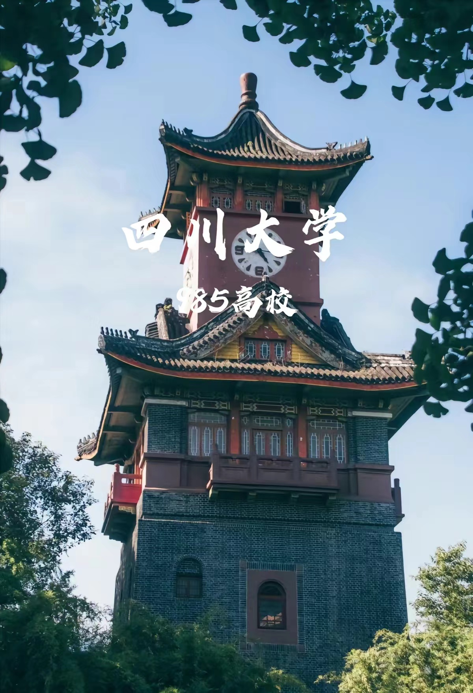

四川简介

一、地理位置与面积
四川省位于中国西南地区，地处长江上游， 位于东经92度21分至108度12分和北纬26度03分至34度19分之间。 东连重庆，南邻云南、贵州，西接西藏，北界青海、甘肃、陕西三省。 四川全省面积48.6万平方公里，居全国第五位。
二、地形地貌
四川省地貌东西差异大，地形复杂多样。 西部为高原、山地，海拔多在4000米以上； 东部为盆地、丘陵，海拔多在1000至3000米之间。 全省可分为四川盆地、川西北高原和川西南山地三大部分
三、历史沿革
四川作为地理区域的概念定于宋朝，前身为唐朝中叶的三川 （剑南西川、剑南东川及山南西道），始于两川，古时即巴蜀地区，古时又多简称为“蜀地”。 1281年，元朝正式建置“四川等处行中书省”，简设四川行省，再简为“四川省”。 曾在民国26年（1937年）1 0月29日，明确以四川为抗战大后方。
四、行政与文化
四川省简称“川”或“蜀”，省会成都。 四川文化丰富，其中包括茶文化、火锅文化、熊猫文化、麻将文化、 道教文化、酒文化、三国文化、蜀绣文化等。四川人热爱茶文化， 有独特的“坝坝茶文化”；火锅是四川人的家常便饭，也是外地人来四川必吃的美食； 大熊猫是四川的符号之一，深受世界各国的喜爱。
五、经济发展
近年来，四川省政府致力于推动经济发展， 特别是在低空经济领域。四川省级财政安排了2亿元资金专项支持低空经济发展， 计划到2027年建成20个通用机场和100个以上垂直起降点，实现支线机场通航全覆盖。